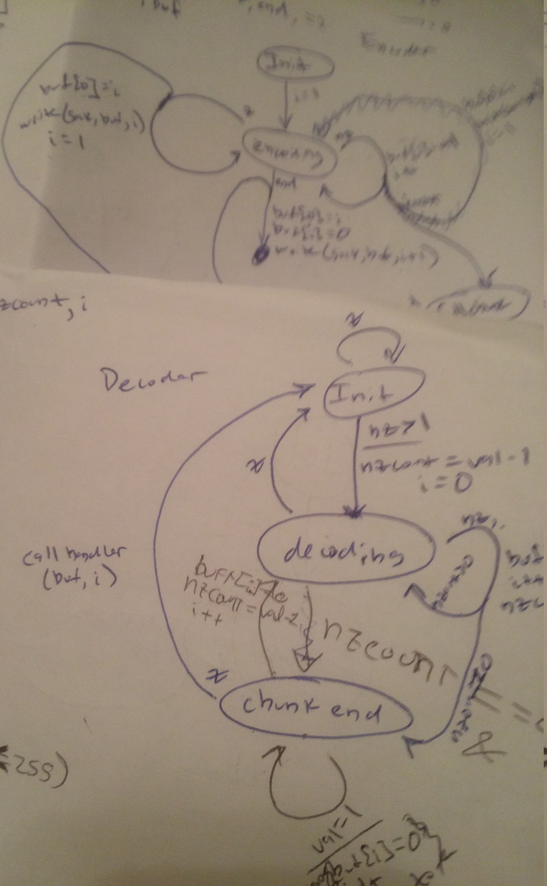
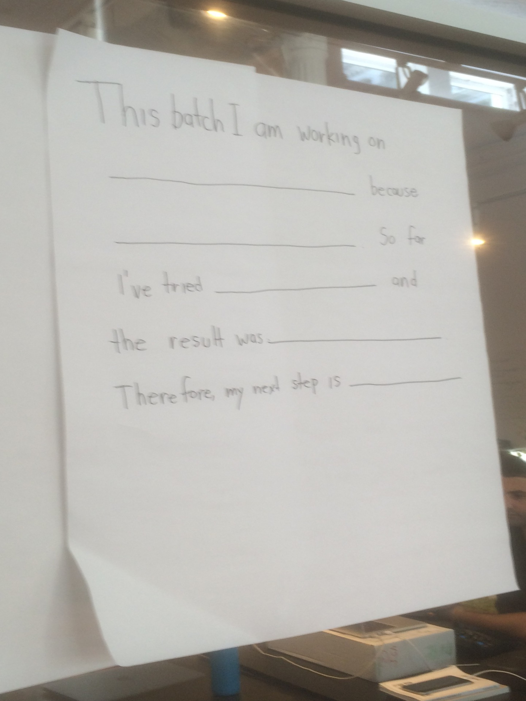

Here’s my second week report:

What was supposed to be just a side project, the small and silly implementation of actors in C, has consumed most of my time. Some of the things I’ve been doing with it:
I replaced my naive thread-safe queue with a better one. Last week I tried to make it less blocking with respect to concurrent enqueue and dequeue operations. The idea was to, instead of having one global lock, to have one lock for the first node and another one for the last node. But there is a problem when the queue has one or less elements: both locks have to protect the same data. I couldn’t come up with a solution but this week I found this article. The idea is very simple: besides the two locks you also need an extra empty node which ensures that the first and the last element are separated. The article describes another queue which is non-blocking and that uses the CAS instruction. Maybe next week I will try to implement it.
Also I’ve been exploring the idea of expanding the project to work accross multiple machines. I told this to Spencer and he suggested an approach that would mean to hold a connection between two machines. I know that this is not the usual way in which actors are supposed to work, but it might be useful for static actors topologies that send each other messages frequently. I think in the usual formulation of actors the communication is intended to be simpler: one short-lived connection, one message. But that approach is easy to implement and going down this other route would mean I’ll have the opportunity to learn something new. Specifically there is the problem of separating each message from the byte stream. Spencer told me aout COBS. I implemented the encoding part. The decoding part is trickier and I’m still on it.
On Monday I attended Emil Sit’s talk on distributed systems. It didn’t focus on the “theoretical” aspects of distributed systems like consensus or the CAP theorem. Instead, he talked about more practical things like monitoring, logging, control and testing, which I think is more useful.
A fellow recurser has been doing an IRC server in Rust as a means to learn the language. So, lacking any imagination, I decided to do exactly the same thing. A problem we encountered is how to make safe concurrent modifications in Rust. As it turns out Rust’s type system was able to detect the race condition that arises when trying to modify the same data from multiple threads. So the solution we found, thanks to the help of another recurser more acquainted with Rust, is two-fold:
- To use a
Mutexto ensure only one thread modifies the data. - To use an
Arcto ensure the lifetime of the data (Or at least that’s what I think theArcis for in this case).

Also with respect to Rust I’ve noted that an unexpected benefit of my C experiments is that now I may understand better the why of Rust’s ownership and borrowing system. The cool thing about Rust is that it’s a modern language that enforces safe memory usage. I’m very curious to see what you can do with it.
And finally on what it’s supposed to be my main project I didn’t advance much. I re-read the leader election part of the raft paper and I think I understand it better now. It looks like learning two things (Raft and Rust) at the same time in order to build something doesn’t sound like a good idea. Instead I think I’ll use a language I know better: Scala. Right now I can even visualize how some of the code will look like in Scala, which is a something I can’t do with Rust at the moment.
On other news:
Attended the Papers We Love Meetup on “Parsing with derivatives”. I read 5/7 pages of the paper. I stopped at the point where I couldn’t understand a thing. Maybe I’ll try to read it again later and hopefully I will try to implement it.
Attended a refactoring dojo with Emil. I learnt I try to do a lot of changes at the same time.
Started reading the IntermezzOS book.
Watched the first lecture of this class and started to solve the first programming assignment.
My main objective for next week will be to organize better my time. I will try to really start on the Raft project, pair-program with more people and do some algorithm problems.